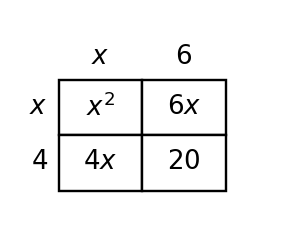

7.
Write an inequality for the graph. Then list three sample solutions and one non-solution, and explain how the open and closed endpoints determine your choices.

This extra practice brings together current work, mastery spiral skills, and the previous-section spiral. Use it to check readiness before the CYU.
Factor the common factor from $6x+9$.
Rewrite $12x+18$ as a product using the greatest common factor.
The expression $(x+4)(x+6)$ and the area model are meant to match. Find the mismatch in the model and explain how to fix it.

A classmate writes the expression $12x+30$ for a rectangle model but cannot explain its structure. Revise the model by giving two equivalent factored forms, choosing the more useful one for finding dimensions, and explaining why.
Use inverse operations on both sides to solve each linear equation, then choose one answer to check by substitution.
Choose whether each equation has one solution, no solution, or all real numbers.
Write an inequality for the graph. Then list three sample solutions and one non-solution, and explain how the open and closed endpoints determine your choices.
Solve $\frac{x-1}{3}\ge4$ and explain what values would make the original statement true.
A context says: "Start with $18$ points, lose $2$ points for each mistake, and then triple the result." Compare $3(18-2m)$ and $18-2(3m)$. Which expression fits the context, and what evidence supports your choice?
A student evaluates $-2x^2$ at $x=-3$ and gets $36$. Critique the work, identify the likely misunderstanding, and give the correct value.
Design a context that leads to $3x+5\le 32$. Define $x$, solve the inequality, and describe three feasible values in context.
A school garden project requires between a minimum and maximum number of students to work each session. Choose reasonable minimum and maximum values, write a compound inequality for the number of students $s$, describe the open or closed endpoints, and include two sample solutions.
Translate the words “triple the input and subtract ${2}$” into a symbolic rule.
Decide whether each ordered pair fits the rule $y={3}x-2$: $({2},{4})$, $({5},{13})$, and $({6},{16})$. Show your checks.
Compare the graph and the table. Decide whether one equation can represent both. Justify with slope and starting value evidence.
| $x$ | 0 | 1 | 2 | 3 |
|---|---|---|---|---|
| $y$ | 5 | 4 | 3 | 2 |

Design a model for a situation that starts with a fixed amount and changes at a constant rate. Include two possible equations, choose one as more realistic, and explain the domain for your context.